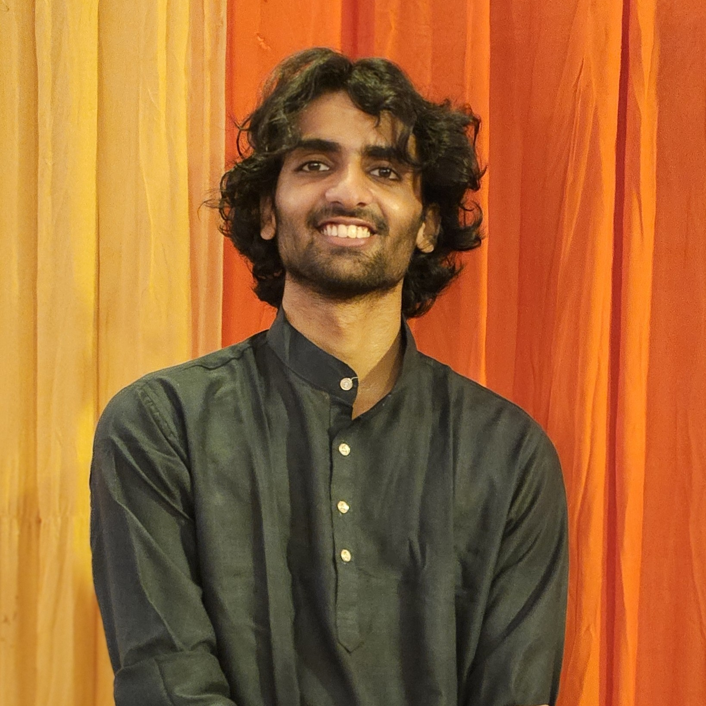

Aryan Singh

Summary
I’m a Mechanical Engineering undergrad at IIT BHU passionate about systems thinking and scalable infrastructure. My internship at Statiq allowed me to deep dive into EV charging strategy—combining route analytics, DISCOM coordination, and cost modeling. As a core member of E-Cell and Future Leaders, I’ve also led initiatives at the intersection of business and technology. I’m currently seeking opportunities where analytical rigor meets strategic execution.
Education
- Bachelor of Technology, Mechanical Engineering - Indian Institute of Technology (BHU) Varanasi
Work Experience
-
Core Team - Do Well Do Good Future Leaders - IIT BHU Chapter
Jun 2025 - Present
-
Strategy Intern - Statiq
Mar 2025 - Jun 2025
- Assessed traffic and freight movement across 20+ highway segments.
- Estimated future e-truck volumes on key logistics corridors till 2030.
- Recommended charger types, capacities, and placement based on route characteristics.
- Identified relevant DISCOMs and upstream infrastructure partners.
- Conducted a detailed cost analysis of charging stations and grid upgrades.
- Proposed viable business models.
- Presented a comprehensive project rollout and stakeholder alignment strategy.
-
Relations Associate - E-Cell IIT BHU
Jul 2024 - Jun 2025
Skills
- Consulting
- Market Entry
- Business Expansion
- Strategy
Certifications
- Internship Certificate - Statiq
Other